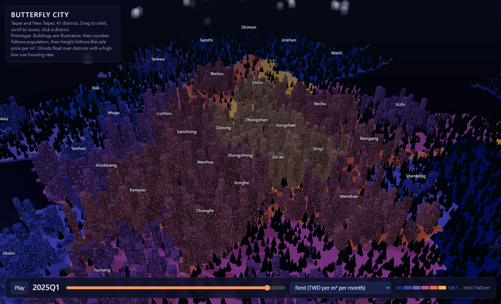
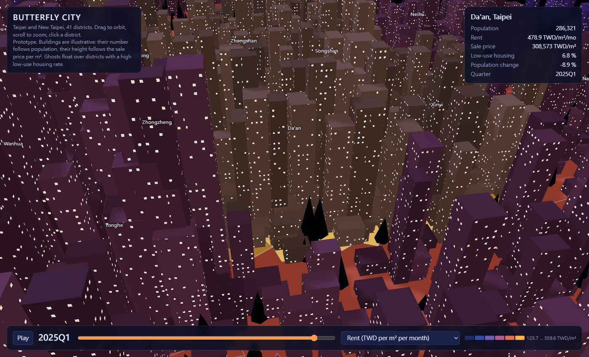
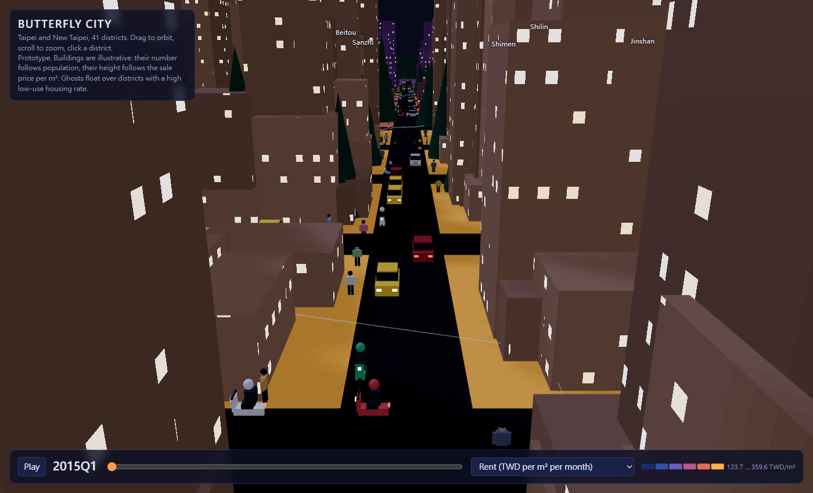
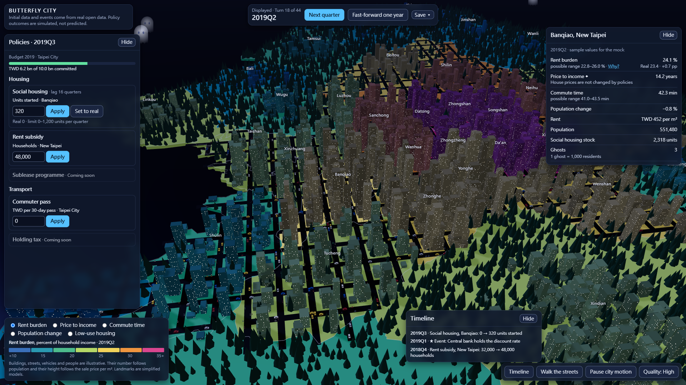
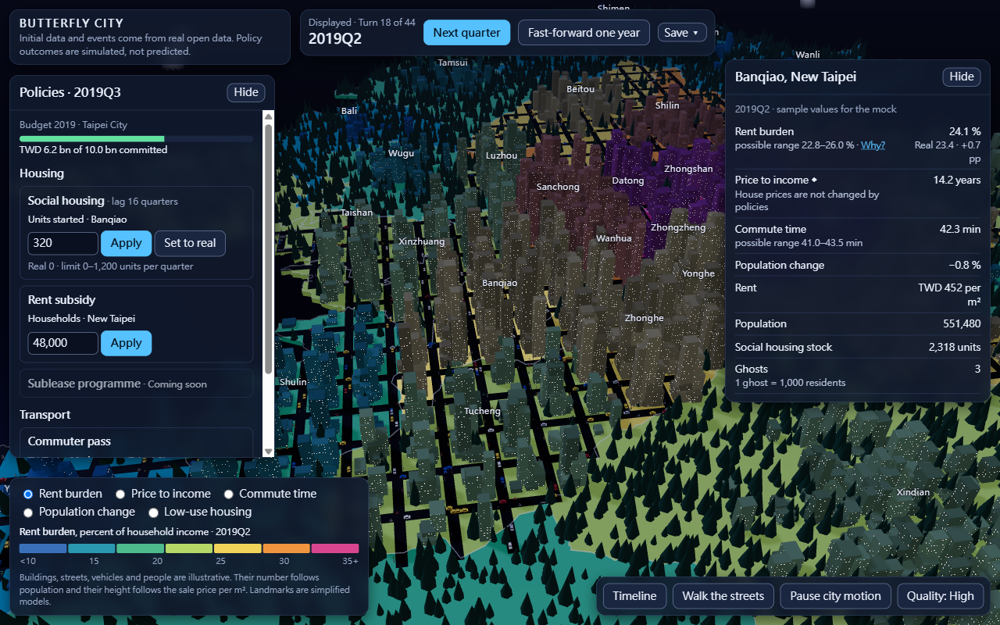
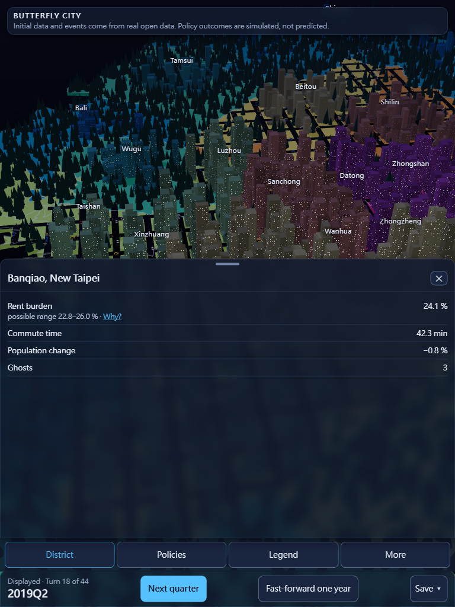
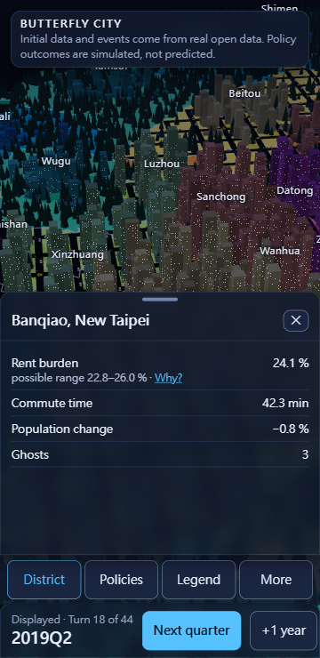

City_Design_Proposal: 3D city
city-3d spec, Requirement 1.1. Prepared 2026-11-18 by Claude Code. Screenshots are from the Prototype (prototype/city3d.html, prototype/layout-mock.html) with the real districts.json and history.json. Panel values in the layout mocks are sample values; the city colours in the mocks show the rent per m² from history.json, because the rent burden needs the engine.
0. Choices to approve
- Look of the city (section 1): night city, fog, moon light, lit windows; buildings and ground tinted by the Indicator_Class colour; streets, cars, scooters and pedestrians moving; forest in mountain districts.
- Overlay layout (section 2): the city fills the screen. At 1024 px and wider, panels float over it (policies left, district right, turn bar top, legend bottom left, view tools bottom right, timeline as a drawer that is open at 1920). Below 1024 px, the turn bar sits at the bottom, a tab row opens one bottom sheet at a time, and a half-open sheet leaves at least 40 % of the height for the city.
- Class colours (section 3): the 7-class sequential ramp of the approved palette (
--color-seq-0to--color-seq-6) on ground and buildings, the diverging ramp for population change, and grey with hatching for "no value". - District states (section 4): four states distinguished by outline width and dash.
- Ghost figures (section 5): one floating ghost per simulated ghost, up to 12 per district; the exact number is always text in the District_Panel.
- Reduced motion (section 6) and the Illustration_Note (section 7).
1. Look of the city



2. Overlay layout at 360, 768, 1280 and 1920 px




3. Class colours
The ground of each district and its buildings take the colour of its Indicator_Class (buildings mix 25 % neutral so windows stay readable). Colours come from the Token_File; the City_View holds no colour literal. The meaning is also text: legend, District_Panel and the spoken district name. Class bounds are those of the game-ui Design_Proposal section 5, decided separately.
4. District states
| State | Ground | Outline |
|---|---|---|
| Unselected | class colour | thin, solid, 35 % opacity |
Focused (keyboard [ ]) | brighter | focus yellow, dashed, 2 px on screen |
| Selected | brightest | white, solid, thick |
| Focused and selected | brightest | white thick + yellow dashed |
The width and dash differ, so the four states read in greyscale. Every district is also in the District_List.
5. Ghost figures
Pale ghost sprites float slowly above a district, one per simulated ghost (1 ghost = Ghost_Size residents), at most 12. No flashing, no full-screen effect. Visible at the top left of the 1920 mock (placeholder count in the Prototype).
6. Reduced motion
| Motion | With prefers-reduced-motion: reduce |
|---|---|
| Opening camera flight | skipped; the city starts in its end view |
| Camera flight to a district | immediate cut |
| Traffic, pedestrians | stand still |
| Ghost floating | stand still |
| Building height change per quarter | set at once |
A "Pause city motion" control does the same for anyone, regardless of the system setting.
7. Illustration_Note
"Buildings, streets, vehicles and people are illustrative. Their number follows population and their height follows the sale price per m². Landmarks are simplified models." Shown under the legend at every width (behind the Legend tab below 1024 px).